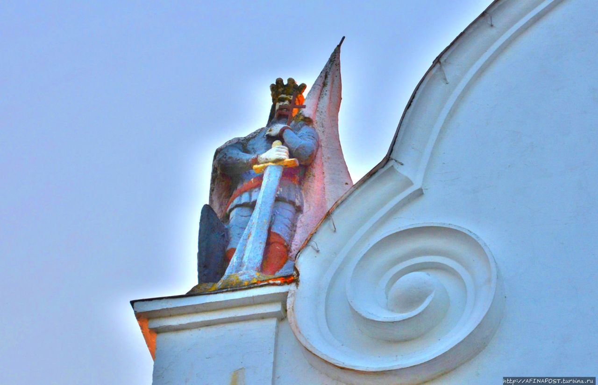
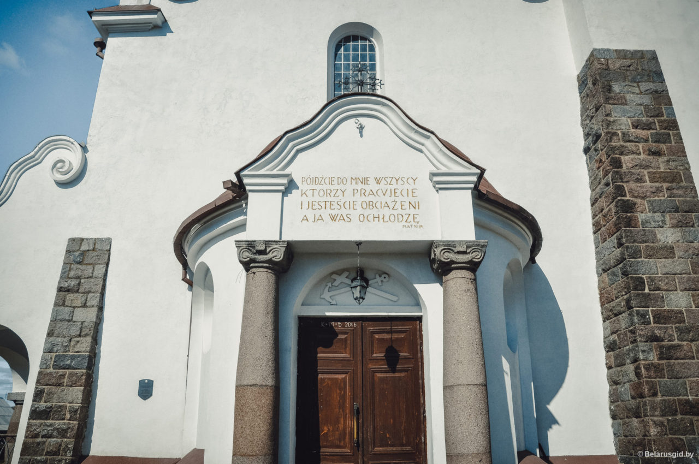

Костёл в Солах

Костел в Солах, который можно увидеть сегодня, был построен в 20-30-х годах, 20 века. Однако история этого места начинается значительно раньше. Первый деревянный храм здесь появился в конце 16 века (1589 год). Его возвели на деньги гетмана Христофора Радзивилла.
История и Современный облик
Радзивилловский костел был практически уничтожен во время русско-польской войны. Довольно быстро его восстановили, но и следующий вариант просуществовал лишь до войны 1812 года. Вопреки разрушениям, старанием и упорством, – костел снова отстроен в 1829 году. К современному облику пришли лишь в начале 20 века, когда Солы находились в составе Межвоенной Польши.Каменный костел Девы Марии Розария в Солах начали строить в 1926 году. Архитектура нового здания носит явные черты стиля модерн с вкраплениями необарокко.
Храм возводился на деньги прихожан и по сохранившемся данным обошелся в 540 000 злотых. Костел торжественно освятили в 1934 году и открыли для всех желающих.Архитектором костела Богоматери Руженцовой выступил Адам Дубанович, а само строительство курировал прораб Бонифаций Трахневич.Костел в Солах – это здание высотой 35 метров, имеющее многоплановую объёмно -пространственную композицию. Основой строения стал объёмный неф с двухскатной крышей. Вертикальной доминанта здания – боковая башня-звонница с фигурным завершением.
Также в архитектуре костела ярко выделяется его асимметрия, подобных храмов в Беларуси совсем немного. Складывается ощущение, что с какой стороны не смотри – здание везде разное.Примечательно, что при советской власти костел не был закрыт и продолжал принимать прихожан.
Чем необычен костел в Солах?
Костел Богоматери Руженцовой не только красивый, но и довольно загадочный. К примеру на крыше храма есть фигура меченосца. Колоритный рыцарь(?) с огромным мечом и флагом, кто это? Корона и старинная одежда намекает на королей, но на кого именно? Если у вас есть ответ – обязательно пишите в комментариях.
Костёл в Солах
Костел Богоматери Руженцовой не только красивый, но и довольно загадочный. К примеру на крыше храма есть фигура меченосца. Колоритный рыцарь(?) с огромным мечом и флагом, кто это? Корона и старинная одежда намекает на королей, но на кого именно? Если у вас есть ответ – обязательно пишите в комментариях.

Кроме статуи есть и ещё интересные детали. В костеле прослеживается морская тематика. Балкон рядом с алтарем выполнен в виде лодки, а над входом в храм изображены крест и якорь. Над которыми надпись на польском языке “pójdźcie do mnie wszyscy ktorzy pracvjecie i jestescie obciazeni a ja was ochlodze“. Это означает что-то вроде “приходите ко мне все те кто работает и обременен, и я вас освежу“.

Во внутреннем убранстве храма стоит выделить алтарный образ Матери Божьей Ченстоховской и боковые фрески «Оборона Ченстоховы» и «Чудо над Вислой». После окончания войны фрески были полностью закрашены. Их восстановили уже в начале 2000-ых.По многим опросам костел в агрогородке Солы входит в десятку самых красивых храмов Беларуси.
Как добраться